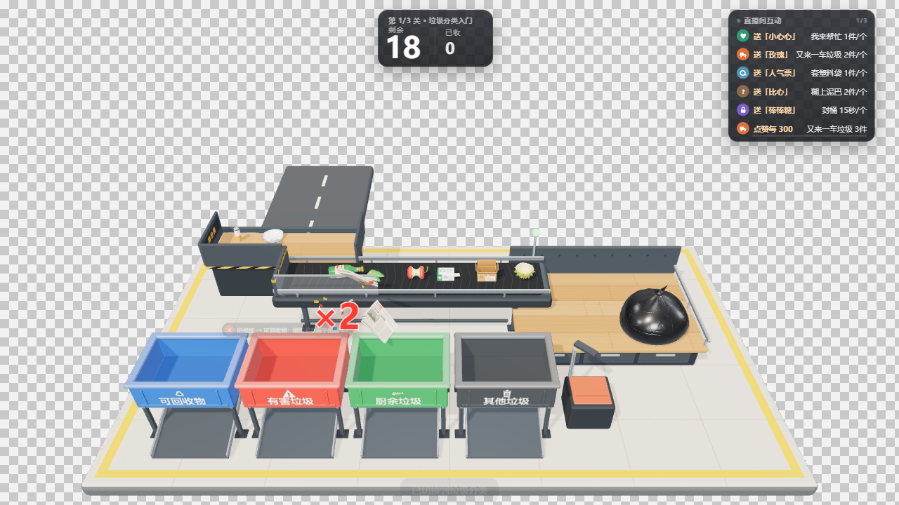
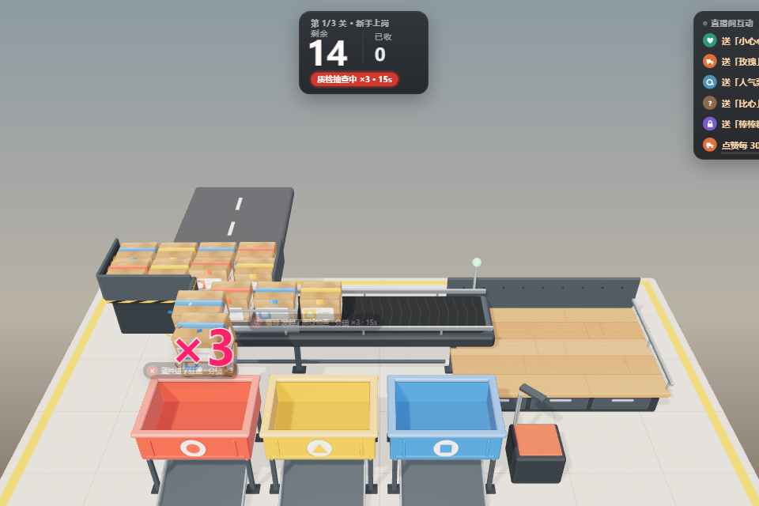
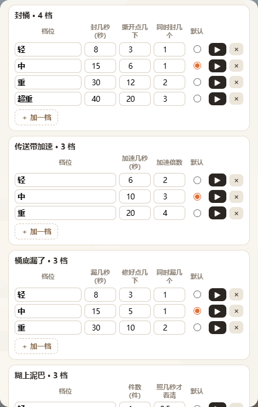
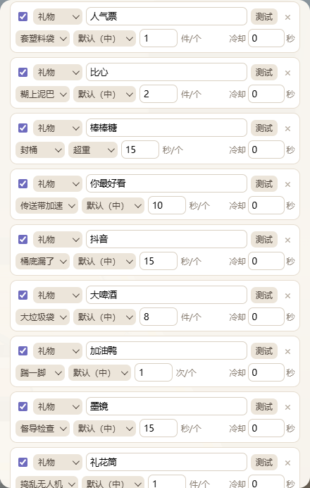
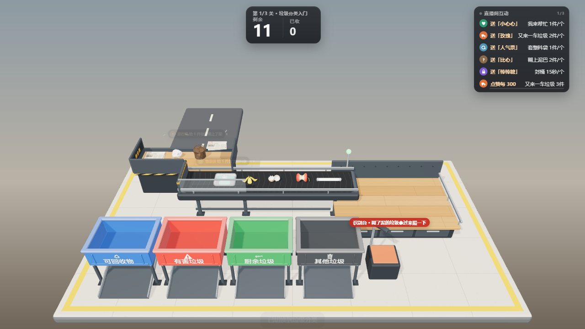
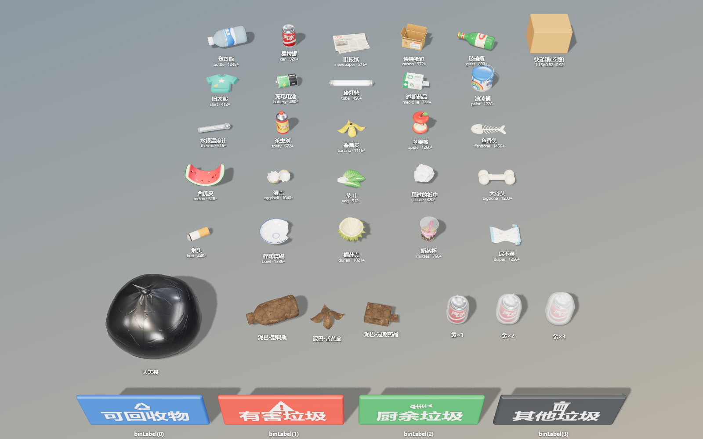
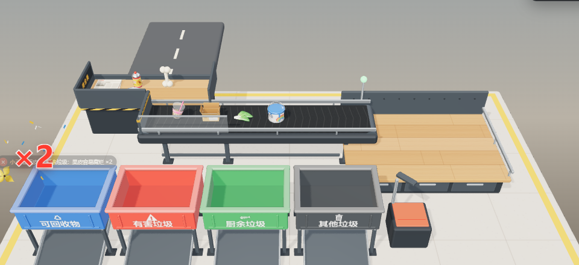
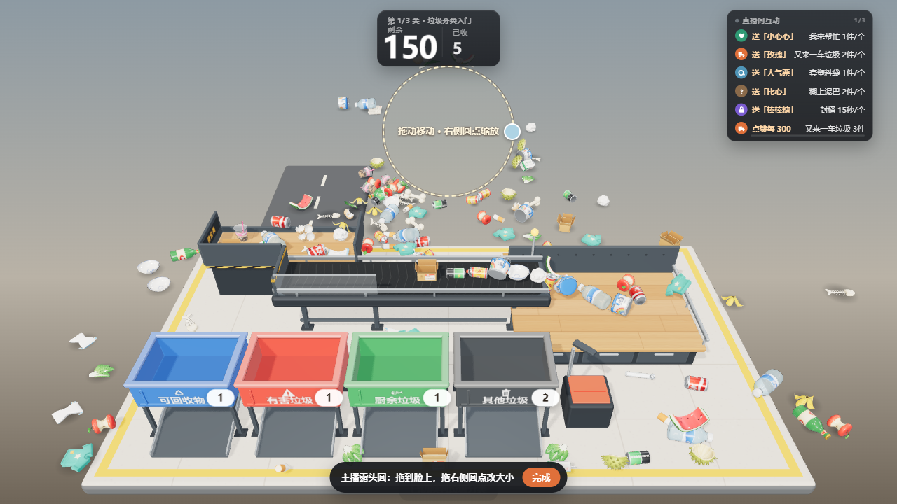
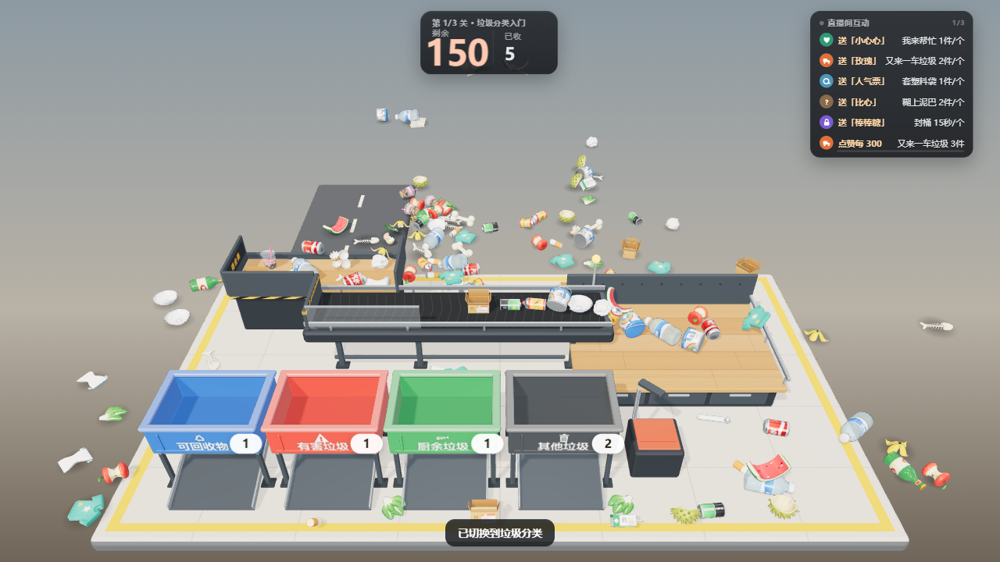
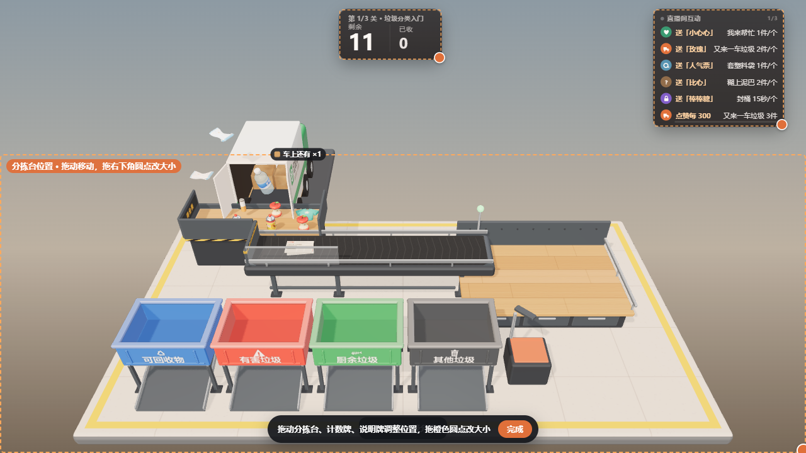

快递分拣 3D
直播互动插件 · 使用说明 · V2.0（2026-10-03）
透明底3D 物理快递 / 垃圾两种玩法分错一变二整窗推挤 + 露头圆菘蓝 / 白曜
主播把传送带送来的东西拖进对的筐里。快递分拣按颜色分红、黄、蓝三筐；垃圾分类按国标四类分可回收物、有害垃圾、厨余垃圾、其他垃圾。分错了，东西会从筐里弹出来、在空中一变二。观众送礼、发弹幕、点赞，可以加货、封筐、让筐底漏掉、给传送带加速、踹桌子、发起抽查、派捣乱无人机，也可以派小无人机来帮忙。
V2.0 起整个窗口都能推挤：弹出来、被踹飞、翻倍出来的件可以散满整个画面，越积越多会互相挤着往上堆。开启「主播露头圆」后，件挤不进圆里，主播的脸始终露在外面。

棋盘格部分是透明的，放进 OBS 后这些地方会露出你的直播画面。
分享包里有什么
| 文件 | 用途 |
|---|
| 快递分拣-3D版.html | 插件本体。单文件，3D 引擎、物理、模型、贴图、音效全部在里面，不需要联网，也不需要其他素材。 |
| 使用说明.pdf | 就是这份说明。 |
| 演示视频.mp4 | 玩法演示（预览背景是灰色，插件本身透明）。 |
三步开始使用
开播前一定要隐藏设置。设置面板打开时会出现在直播画面里。
1放进直播软件，任选一种：
- 菘蓝：把 HTML 导入菘蓝的自定义插件，按宿主方式把插件画面放进 OBS。礼物会自动接入。
- 白曜重工：在「插件」页导入 HTML，上屏到 OBS 浏览器源。礼物、弹幕和白曜规则动作都能接入。
- 只用 OBS：添加「浏览器」来源 → 勾选「本地文件」→ 选这个 HTML；宽 1920、高 1080（按你的画布填）。
2改成你直播间的礼物。在插件画面上双击空白处（或按 H）打开设置 →「互动」页，把示例礼物名改成你直播间真实的礼物名 → 点「保存规则」。然后在「测试」页用「模拟直播事件」发一个试试。
3选玩法、摆位置、关设置。面板顶部选「快递分拣」或「垃圾分类」（点两下确认，会重开本关）。「画面」页点「拖动调整布局」，把分拣台、计数牌、说明牌拖到合适位置；需要的话打开「主播露头圆」，把圆拖到脸上。最后点面板右上角「隐藏设置」。
在 OBS 里怎么操作：主播需要用鼠标拖东西。OBS 浏览器源里的操作方法是：右键该来源 →「交互」，在弹出的窗口里点击、拖动。快捷键在交互窗口里同样有效。
主播怎么玩
每一关由货车把东西运到「待分拣 / 待分类」堆货台，传送带从最前面一件件取件，送到右侧工作台。按住一件拖到对的筐上方松手，掉进筐里才算收下。
- 快递：看箱子上的颜色和图形，投进红○、黄△、蓝□筐。
- 垃圾：看是什么垃圾，投进 可回收物 有害垃圾 厨余垃圾 其他垃圾。拿起来时头顶会显示它叫什么。
- 分错了：东西会从筐里弹出来，在空中一变二（抽查期间一变三），剩余数加一；被踹、被炸、被捣乱无人机丢进错筐的也一样翻倍。
- 压在别的东西下面的拿不动，要先搬上面的；缠了胶带 / 套了塑料袋的先点几下撕开；没有面单的「?」件 / 糊了泥的垃圾先拿到右边扫码台（识别台）上方停一下，看清楚再投——没看清就投，只会被弹回来，不算分错。
顶部计数牌显示「第几关 · 关名 · 剩余时间」和剩余 / 已收件数。清空就是「收工」，结算会写「分错几次、多干几件」；有限时的关卡时间到了算「超时」。
快捷键：H 开关设置，1–9、0 直接触发效果（0 是抽查），Esc 放下手里的东西。长按不会连发。
观众能做的 12 种互动
每个效果都会在画面上显示是谁干的。两种玩法共用同一套互动规则，名称按玩法自动切换。
| 快递 / 垃圾 | 画面上发生什么 | 主播怎么应付 |
|---|
| 又来一车 / 又来一车垃圾 | 货车（垃圾模式是绿色环卫车）把印着送礼人名字的货卸到堆货台 | 多分拣；堆货台满了货车会停着等 |
| 爆箱盲盒 / 大垃圾袋 | 橙色圈预警后砸下一个大箱子 / 一大袋垃圾，不能直接投 | 连点几下拆开，炸出一堆混在一起的东西 |
| 封筐 / 封桶 | 随机一个筐被盖板和警示胶带封住 | 连点盖板撕开，或等时间到 |
| 传送带加速 | 传送带按倍数加速，状态灯红闪 | 东西冲得飞快，可能飞到地上 |
| 筐底漏了 / 桶底漏了 | 随机一个筐的底板翻开 | 投进去的会从下面漏到地上；点这个筐几下修好 |
| 撕掉面单 / 糊上泥巴 | 箱子变成「?」件 / 垃圾糊满泥看不出是什么 | 拿到扫码台 / 识别台照一下再投 |
| 缠胶带 / 套塑料袋 | 缠上几层胶带 / 套上几层塑料袋 | 每层点一下撕开（垃圾要破袋投放） |
| 踹一脚 | 台面上的东西全部弹起，一部分被踹飞 | 把飞出去的捡回来 |
| 我来帮忙 | 白色小无人机飞来，一件件帮忙投对筐 | 救场，喘口气 |
| 质检抽查 / 督导检查 | 计数牌上亮起红色倒计时「抽查中 ×3」 | 倒计时内分错一变三（倍数按档位，重档一变四），手要稳 |
| 捣乱无人机 | 黑红色无人机飞来，抓走台上一件丢进错筐 | 丢进错筐的同样一变二，赶紧收拾 |
| 刁钻垃圾（垃圾模式） | 从工作台上方落下几件易错垃圾（大骨头、奶茶杯、榴莲壳……），带着送礼人的名字 | 分对了没事；分错会显示「XX 的大骨头难倒了主播」，结算记一笔。快递模式下按「又来一车」加件 |
画面右上角的「直播间互动」说明牌会自动列出已启用的规则，告诉观众送什么有什么效果（超过 5 条自动翻页）。

抽查期间分错，一件变三件；红色大字「×3」在裂开的地方弹出来。
互动分档：每种互动想要几档就几档
同一种互动可以分出任意多档（最多 12 档），每一档有这种互动的全部参数。例如「封桶」可以有：小心心 → 封 1 个桶 8 秒；嘉年华 → 同时封 3 个桶 40 秒、要点 20 下才撕开。

「参数」页：一档一行，改名字、改参数，◉ 设默认档，▶ 当场试，× 删除，「＋ 加一档」。

「互动」页：每条规则选用哪一档。
- 默认三档叫 轻 / 中 / 重，名字可以随便改（同一种互动里不能重名，也不能只写数字）。
- 每条规则自己选档。规则里的数值就是这一档的数量；礼物个数只乘数量，不会自动升档。
- 打 ◉ 的是默认档：测试按钮、快捷键、没选档位的规则、白曜动作没写档位时都用它。
- 删掉一档时，选了它的规则自动改用默认档；改名、调顺序不影响规则的选择。
- 白曜动作名后面加档位名或第几档：seal:重、seal:2（也认 seal-重、seal 重）。
- 加速、抽查连着送：按送达顺序一段接一段，每段用送礼人自己那一档的倍数，标签署当前这段的人，后面排着的写「接着 谁 几倍」。封桶、漏桶叠到同一个桶上时加时间，要点的下数取更难的那档。
- 说明牌只给明确选了档的规则写档名（如「封桶·超重」），用默认档的不写。
| 互动 | 每一档能调的参数 |
|---|
| 又来一车 | 件数 |
| 爆箱盲盒 / 大垃圾袋 | 炸出件数、拆开点几下 |
| 封筐 / 封桶 | 封几秒、撕开点几下、同时封几个 |
| 传送带加速 | 加速几秒、加速倍数 |
| 筐底漏了 / 桶底漏了 | 漏几秒、修好点几下、同时漏几个 |
| 撕掉面单 / 糊上泥巴 | 件数、照几秒才看清 |
| 缠胶带 / 套塑料袋 | 件数、每件几层 |
| 踹一脚 | 踹几脚、踹飞比例、力度 |
| 我来帮忙 | 帮收件数、飞行速度 |
| 质检抽查 / 督导检查 | 抽查几秒、分错变几件 |
| 刁钻垃圾 | 件数 |
| 捣乱无人机 | 丢错件数、飞行速度 |
另外「参数」页的「分错时变成几件」可以把平时的一变二改成一变三、一变四；抽查档位的倍数不会低于它。
垃圾分类模式
四个桶按国标 GB/T 19095-2019：可回收物 蓝、有害垃圾 红、厨余垃圾 绿、其他垃圾 黑灰。「关卡」页可以把桶的叫法换成上海的「湿垃圾 / 干垃圾」。

垃圾模式：绿色环卫车、四个分类桶、右边的识别台。
内置 25 种垃圾（★ 为易错品种）

| 分类 | 品种 |
|---|
| 可回收物 | 塑料瓶、易拉罐、旧报纸、快递纸箱、玻璃瓶、旧衣服★ |
| 有害垃圾 | 充电电池★、废灯管、过期药品、油漆桶、水银温度计、杀虫剂 |
| 厨余垃圾 | 香蕉皮、苹果核、鱼骨头★、西瓜皮、蛋壳★、菜叶 |
| 其他垃圾 | 用过的纸巾★、大骨头★、烟头、碎陶瓷碗、榴莲壳★、奶茶杯★（喝完的）、尿不湿 |
分错时会冒一条小知识，例如「大骨头 → 其他垃圾：太硬难腐烂，会伤处理设备」「鱼骨头 → 厨余垃圾：鱼骨、虾壳这类小骨头能堆肥」。
各地口径不一样。「关卡」页的「垃圾分类设置」里可以关掉某种垃圾，或改它该进哪个桶；改过分类的品种只提示「品种 → 分类」，不再显示原因。默认分类参考国标和上海官方说明，普通无汞干电池多地按其他垃圾，所以内置的是「充电电池」。
分错翻倍 · 整窗推挤 · 露头圆
分错 → 弹出 → 一变二
掉进错筐的东西会弹出筐外，约 0.2 秒后在空中裂成两件（抽查期间三件），红色大字「×2」，同时显示该投哪里。新出来的件和原来的一样，送礼人名字也一样。被踹、被炸、被捣乱无人机丢进错筐的同样翻倍；没扫码 / 没识别的件只弹出不翻倍。

「参数」页可以改成「只弹回，不加件」（旧版玩法）；「场上件数上限」默认 150，到了上限分错只弹出不翻倍，观众加件也按这个上限。
整个窗口都能推挤
「参数」页「件能跑到哪」默认「整个窗口」：3D 画面铺满窗口，窗口四条边是看不见的墙，地台外面也有看不见的地面。弹出来、被踹飞、翻倍出来的东西会散到画面任何地方，越积越多就互相挤着往上堆；地台外的件下面有一圈淡淡的接地阴影（可关）。「地台后方空间」小 / 中 / 大 决定东西能往后滚多远。想要旧版效果就选「只在地台上」。
主播露头圆

「画面」页 →「调整位置和大小」：拖圆内移动，拖右侧圆点改大小。

完成后圆圈完全透明，东西只会堆在圆外面。
和扫叶子一样，默认关闭。开启后，屏幕上这个圆在 3D 里是一根从镜头射出去的隐形圆锥：东西从哪个方向来都挤不进去，主播的脸始终露在外面。圆压到传送带、工作台或筐时，编辑条会提示「台上的件会被推开」。
设置面板
双击画面空白处 / 按 H / 鼠标移到右下角点 ⚙ 打开。面板顶部切换玩法。所有下拉菜单都是页面内菜单，OBS「交互」窗口里也能正常选择。
- 测试：12 个效果按钮（按各互动的默认档）；模拟礼物 / 弹幕 / 点赞 / 关注 / 进场（走互动规则，和真礼物一样）；连送；自动演示；停止所有效果；重开本关；预览背景。
- 关卡：当前玩法的关卡（快递按红黄蓝件数，垃圾按四类件数），缠胶带 / 套袋、无面单 / 糊泥、盲盒 / 大垃圾袋、倍速、限时；可排序、增删、单独开始。改了只影响之后开始的关，正在玩的这一关不变。垃圾模式下还有桶的叫法、拿起时显示名字和 25 种垃圾的开关与分类。
- 互动：礼物 / 弹幕关键词 / 点赞累计 / 关注 / 进场 → 效果 · 档位 × 数值；可设每位观众冷却；最多 60 条。
- 参数：传送带速度、上件间隔；互动分档（每种互动的档位与全部参数）；分错与场地（分错后、分错时变成几件、件数上限、件能跑到哪、后方空间、接地阴影）。
- 画面：分拣台位置、主播露头圆、视角、画面组件、管理面板、声音、性能。
- 连接：接收直播互动总开关；本机礼物通道端口；连接状态；最近 30 条互动和实际执行结果（礼物名写错会显示「没有匹配规则」，到上限会显示「已到上限，没有执行」）。
- 备份：导出全部设置（两种玩法的关卡、规则、布局、参数）；导入先预览再确认；全部恢复默认。
画面页：位置、露头圆、视角、性能
- 分拣台位置：预设「全屏 / 下方大半屏 / 底部横条 / 左下角 / 右下角」，或填百分比。只决定分拣台框在哪里，3D 画面始终铺满整个窗口，货车、飞出去的件不会被框边切掉。
- 拖动调整布局：直接拖分拣台、计数牌、说明牌（开了露头圆时圆也能一起调），拖橙色圆点改大小。
- 主播露头圆：开关、圆的大小、调整位置和大小、回到默认位置。
- 视角：斜俯视 / 高俯视 / 低角度正面 / 侧斜，以及俯仰、左右转、放大、平移。
- 组件：计数牌、互动说明牌、观众署名可单独开关和调大小；车上件数、筐上数字、演示光标也可关。计数牌关掉时，过关的结算卡仍会临时出现，方便点「下一关」。
- 性能：渲染清晰度、帧率上限、阴影、闲置降帧、抗锯齿。

布局调整模式：虚线框可拖动，橙色圆点改大小，点底部「完成」保存。
礼物接入说明
菘蓝：在菘蓝插件宿主里自动接入礼物、弹幕、点赞、关注、进场，不用设置。
白曜重工：上屏后同样自动接入。也可以在白曜「规则」里把本插件设为动作目标，动作名填：truck 又来一车、blind 盲盒 / 大垃圾袋、seal 封筐、speed 传送带加速、leak 筐底漏了、strip 撕面单 / 糊泥、tape 缠胶带 / 套袋、kick 踹一脚、help 我来帮忙、audit 抽查、tricky 刁钻垃圾、prank 捣乱无人机（也可以直接填中文名）。动作名后加档位：seal:重、seal:2，不写就用默认档。动作数值就是效果数量；不填数值时用这一档的数量。
本机礼物通道：没有 SDK 时自动连接本机端口（默认 10030，可在「连接」页改成 9910 菘蓝整蛊机），断线 3 秒自动重连。
礼物名匹配忽略大小写、全角半角和首尾空格；礼物效果 = 规则数值 × 礼物个数；弹幕只要包含关键词就触发；点赞按全场累计。
避免重复触发：同一个礼物不要在白曜规则和本插件「互动」页两边都配，否则会触发两次。同一时间只让一个插件页面收礼（不要同时开着多个浏览器源）。
想暂时停掉观众效果：「连接」页关闭「接收直播互动」，或在「测试」页点「停止所有效果」。
设置保存与换电脑
设置自动保存在当前浏览器里。OBS 浏览器源、菘蓝、白曜、普通浏览器各自分开保存。换环境时在原来的地方「备份 → 导出全部设置」，到新地方「导入设置」。旧版 V1.0 的设置会自动沿用，新增项用默认值。
性能建议
V2.0 的 3D 画面铺满整个窗口。卡顿时先把「画面 → 性能」里的阴影改成「简化」或「关闭」，再把渲染清晰度降到 75%；帧率上限 30 或 45 对直播通常足够。场上东西越多越吃性能，可以把「场上件数上限」调低。
常见问题
| 问题 | 怎么办 |
|---|
| 送礼没有反应 | 打开「连接」页看最近的互动：「没有匹配规则」说明礼物名写得不一样；「接收已关闭」说明总开关关了；列表是空的说明礼物没进到插件，检查菘蓝 / 白曜是否在运行、插件是否已上屏。 |
| 东西挡住了脸 | 「画面」页打开「主播露头圆」，把圆拖到脸上、调大小。 |
| 东西太多、满屏乱飞 | 「参数」页把「件能跑到哪」改成「只在地台上」，或调低「场上件数上限」，或「分错后」选「只弹回」。 |
| OBS 里拖不动 | 右键浏览器来源 →「交互」，在交互窗口里操作。 |
| 画面里有白底 / 灰底 | 插件本身透明。检查「测试」页的预览背景是否选了「透明」，以及设置面板是否已隐藏。 |
版本记录
V2.0（2026-10-03）
新增
- 垃圾分类玩法：四个国标分类桶（可换上海叫法）、25 种 3D 垃圾、品种开关与改分类、分错时的小知识；两种玩法各自一套关卡，面板顶部切换。
- 分错一变二：两种玩法都生效，任何原因掉进错筐都翻倍；抽查期间一变三；件数上限可调；结算显示分错次数和多干的件数。
- 整窗推挤：3D 画面铺满窗口，东西能散满整个画面，窗口四边是隐形墙；地台外的接地阴影；可切回只在地台上。
- 主播露头圆：和扫叶子一样拖动、改大小，完全透明，有碰撞体积。
- 三种新互动：质检抽查 / 督导检查、刁钻垃圾、捣乱无人机；快捷键 0 = 抽查。
- 互动分档：12 种互动都能自定义任意多档（最多 12 档），每档包含这种互动的全部参数；每条规则单独选档，礼物个数只乘数量不升档；白曜动作可带档位后缀。加速、抽查连着送时按顺序排队，各用各的倍数。
修复
- 默认「下方大半屏」布局下货车上半截被切掉。
- 双击按钮（下一关、隐藏设置）或连点封筐、盲盒时，设置面板误弹到直播画面上。
- 按观众名生成的贴图不释放，长时间直播内存越积越多。
- 筐上的数字、车上件数、署名在跳动时会闪到画面左上角。
- 超时失败后来礼物会把本关「复活」并算过关；改关卡会立刻改动正在玩的这一关。
- 窗口缩放后计数牌、说明牌大小不跟着变；长按快捷键会连发；空闲降帧时限时倒计时变慢。
- 日志和提示写的是请求量而不是实际执行量；换关时观众排队的效果被清空；关掉计数牌后找不到「下一关」；加速署名写死「3 倍速」。
- 导入设置时不检查数值范围（例如面板缩放为 0 会让面板永远看不见）。
玩法变化与升级注意
- 旧设置自动沿用。V1.0 的「默认数量」和「难度」变成每种互动的「中」档（默认档），另外自动补上「轻」「重」两档；旧规则都用默认档。新默认：分错后「弹出并翻倍」、件能跑到哪「整个窗口」、露头圆关闭。想要 V1.0 的手感：「参数」页改成「只弹回」和「只在地台上」。
- V2.0 的设置和规则另存一份：第一次打开时读入 V1.0 的，之后不再改动 V1.0 的存档。要退回 V1.0，直接打开 V1.0 文件，看到的是升级前的设置；再回到 V2.0 也一切照旧。在 V1.0 里改的设置不会带进 V2.0。
- 「场景区域」改名「分拣台位置」，只决定分拣台框的位置，3D 不再只画在框里。
- 示例规则新增 墨镜→抽查、礼花筒→捣乱无人机、爱你哟→刁钻垃圾（只影响全新安装；已有规则不变）。
V1.0（2026-09-27）
首个分享版。3D 分拣台与物理堆叠；9 种观众互动；多关卡编辑；互动规则；菘蓝 SDK、白曜动作、本机通道接入；布局拖动与视角调整；性能档位；设置导出导入。
验证范围：在电脑浏览器里用自动化脚本逐项测试了两种玩法的分拣、分错翻倍、抽查、捣乱无人机、刁钻垃圾、整窗边界、露头圆透明像素、旧版问题修复、互动分档、设置保存与切换，以及从 V1.0 升级和退回；测的是分享包里的 HTML 文件本身，用本地网页和直接打开文件（file://）两种方式都测过。尚未在真实直播间、OBS 与各家电脑显卡上长时间实测，首次使用请先在测试场次里送一个礼物确认效果。